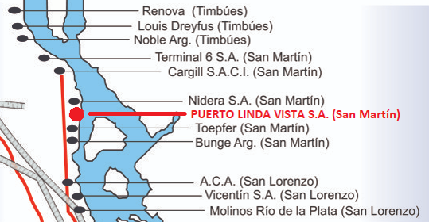

¿Cómo llego?
Nuestra ubicación:
Puerto Linda Vista se encuentra ubicado en el Río Paraná Km 450,5 sobre un predio de 3 Hectáreas y un frente de 160 metros de costa sobre el río, con derecho a uso de hasta 220 metros de espejo de agua, y con calado hasta 32 pies. La zona se encuentra servida por el camino de acceso desde la Ruta Nacional N° 11, a una distancia de 4 Km., el mismo está en condiciones de transitabilidad permanente y a 6 Km. de la autopista Rosario Santa Fe, encontrándose en la zona varias poblaciones que sirve de asentamiento para los operarios.